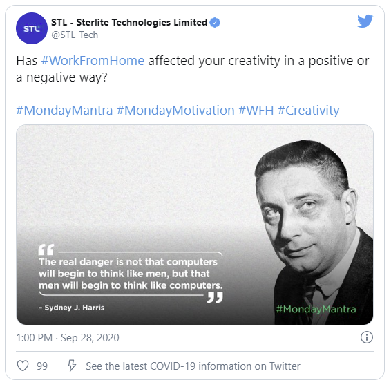

How often do you lose the track of time while working from home? Almost everyday, right?
When your mind is completely onto work, it is quite possible for you to be unaware of the amount of time that has passed.
This is an unhealthy practice. Being a workaholic is good but within the working hours. You need not overdo it.
A general work-life balance is a very important factor when working from home. Your personal life is just as important as your professional life.
You should always make a routine of your workdays and working hours. It has to be prepared in a way that you can follow it with ease.
If you plan on working for 8 hours straight on a workday, from 10 am to 6 pm, make sure you stick to your schedule.
You might have days where you need to finish a pile of work; in case of which, you can either resort to communicating with your manager for an extension or you can extend your work time for that particular day as one day can be considered.
But doing this on a daily basis can be harmful as working over-time can stress you out, both physically and mentally.
If you do not follow an organized timetable for work, you are going to miss out on your social life too.
Like they say,”All work and no play makes Jack a dull boy”- do not let yourself become a Jack. Working tirelessly everyday past your work hours, to meet your goals and depriving yourself of spending time with friends and family is detrimental.
It’s the simplest rule, yet the toughest to follow.
Wrap it up at the correct hour!